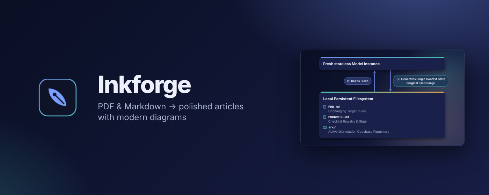
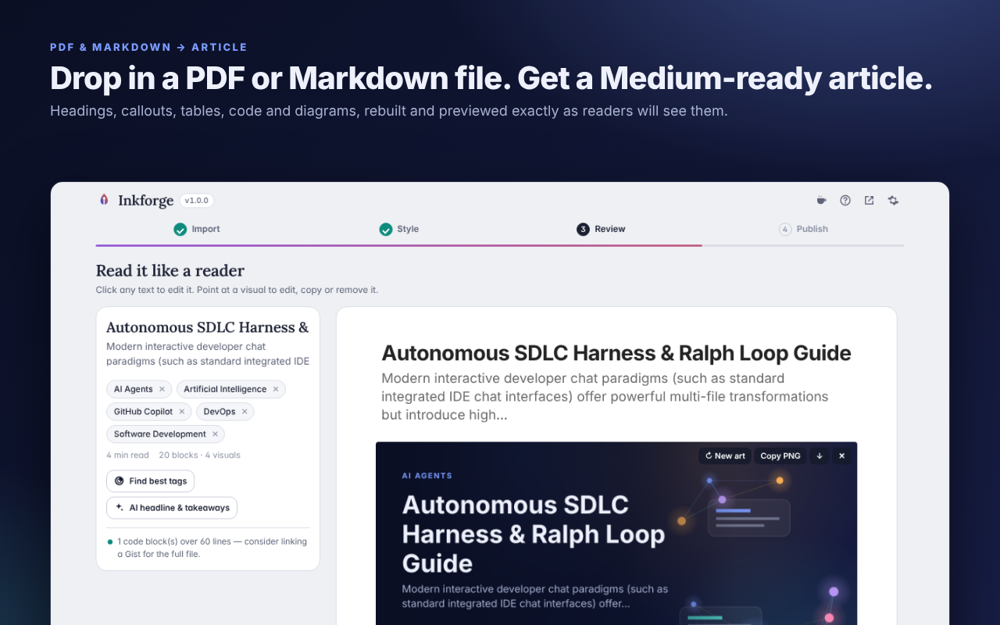
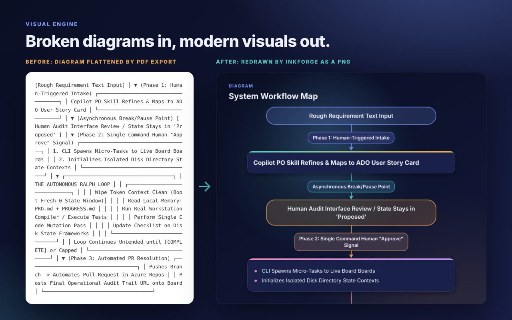
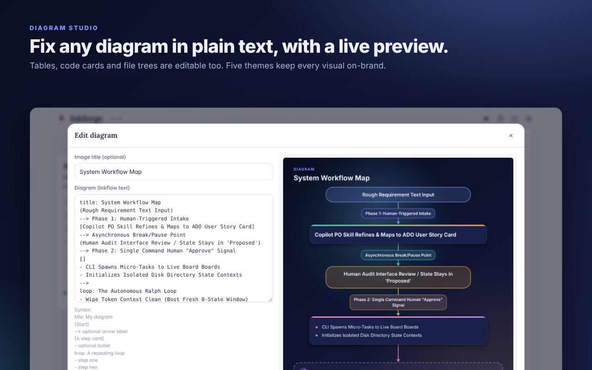
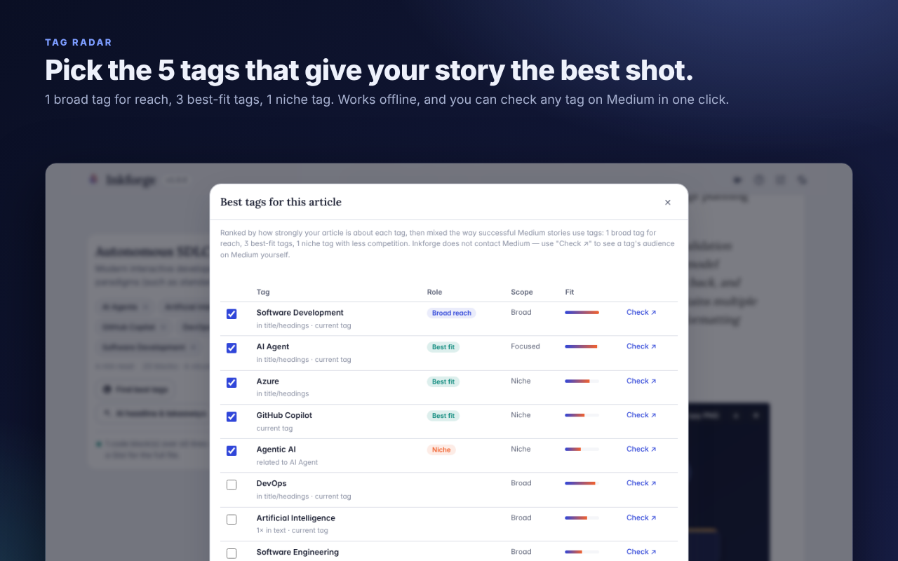
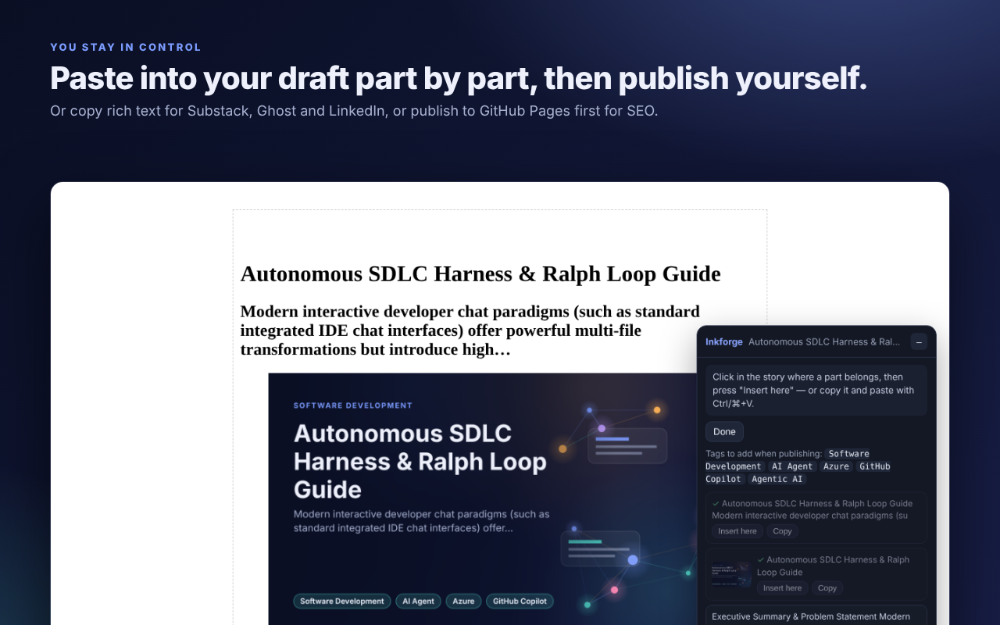

Turn PDFs and Markdown into polished Medium articles
Every diagram, table and code block is redrawn as a crisp, modern image — so your article looks designed, not pasted.
Add to Chrome — free

Why Inkforge
Medium can't display tables, ASCII diagrams, Mermaid charts or highlighted code — and pasting a PDF loses its structure entirely. Inkforge rebuilds that structure and redraws the visuals, then shows a Medium-accurate preview you can edit in place before you paste it in, piece by piece.
What it does
PDF, Markdown, text or HTML files, or paste straight from Google Docs, Word, Notion or any web page — headings, lists, tables, links and images stay intact.
Headings, bold text, callouts, lists, tables, code blocks and indentation are recovered, not just dumped as flat text.
ASCII and box-drawing diagrams are reconstructed even when the source PDF collapsed them onto one line.
Diagrams, tables, code, file trees and cover images are redrawn as crisp 1400px Retina PNGs, in 5 selectable themes.
Edit any diagram as plain text with a live preview — no separate design tool needed.
Suggests a balanced mix of 5 Medium tags — broad, best-fit and niche — entirely offline.
Two heading levels, split long paragraphs, captions, alt text and an estimated read time, matched to how Medium renders.
Opens a new Medium story with every part listed, ready to insert or copy one piece at a time.
Copy as rich text for Medium, Substack, Ghost or LinkedIn, or publish images to your own GitHub Pages first.
Bring your own key — Claude, an OpenAI-compatible endpoint, or a local Ollama server — with an automatic AI-disclosure line added for you.
SteelInkEmberLightDark
See it in action





Private by design
Everything runs in your browser. No account, no tracking, no server — Inkforge sends nothing to its developer. Optional features (AI assist, GitHub publishing) talk only to the services you configure, with your own keys. See the privacy policy for the full details.